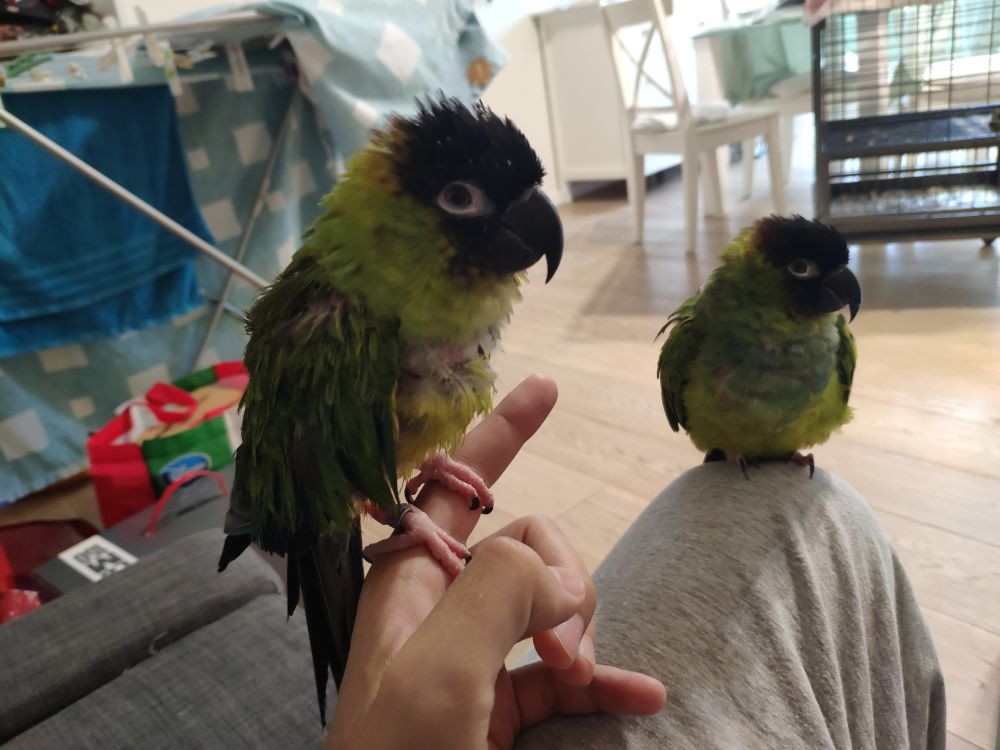

NaNday.Dev
Hi!
My name is Guido. I'm an Italian software developer.
I'm a Dungeon Master (currently on temporary vacation due to COVID-19), an avid reader and a parrot lover.
Those are my two grumpy, scream-addicted parrot ladies, George and Marty

Yes, George... you, on the right... YOU are the grumpy one!
For those of you wondering, yep, those are male names... we didn't know their gender at the time.
If you wish to know more about George & Marty, and their stories, visit their page.